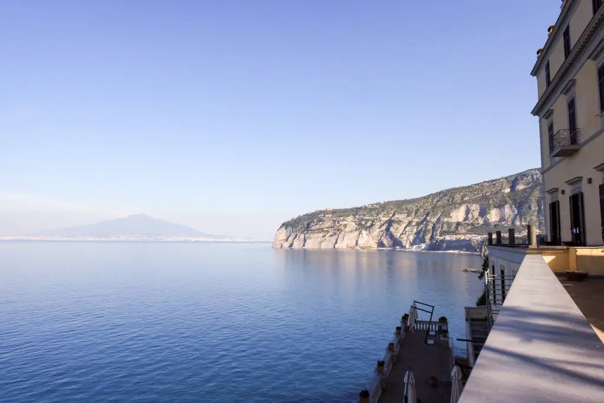

Camere in villa
Ampie e spaziose, in un elegante contesto d’epoca, su 3 piani con ascensore. Metà delle camere ha vista mare.
Case per ferie delle Figlie di Maria Ausiliatrice · 8 case in 5 regioni
Dimora storica a picco sul mare
Sant’Agnello (NA) · Campania Dimora storica
Dimora storica originale dello scrittore Marion Crawford, a picco sul mare con vista sul Golfo di Napoli e sul Vesuvio. Aperta tutto l’anno, dispone di una grande sala riunioni elegante, panoramica e molto luminosa, e di altre sale di varia dimensione, ideali per piccole riunioni.
Ampie e spaziose, in un elegante contesto d’epoca, su 3 piani con ascensore. Metà delle camere ha vista mare.

Nel parco di 1.500 m², staccate dal corpo principale della villa: stile essenziale e un tavolino esterno per godersi i profumi della macchia mediterranea.
Quando nel 1885 lo scrittore americano Francis Marion Crawford acquistò la villa, era una semplice casa colonica circondata da un vasto giardino: qui compose molte delle opere che lo resero celebre nel mondo. Con il tempo la costruzione fu modificata fino a somigliare agli antichi castelli medievali, e l’interno fu arricchito con pannelli di legno intagliati dall’artigiano sorrentino Giovanni Massa.
Alla morte dello scrittore, nel 1909, la villa passò alla figlia Eleonora e, nel 1954, fu donata all’Istituto di Maria Ausiliatrice, che ancora oggi accoglie i tanti giovani che qui si riuniscono per qualche ora di svago e di preghiera.
I caratteristici contrafforti furono realizzati per prevenire smottamenti della costa e rendere la villa visibile dal mare. Sulle pietre dei bastioni Crawford fece scolpire le parole “In tempestate securitas”: un posto sicuro nella tempesta.
Via Nuovo Rione Cappuccini 2, 80065 Sant’Agnello (NA)